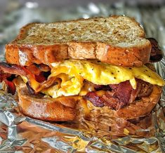

Bacon Egg & Cheese

Heres how to make a delicious bacon, egg, and cheese sandwich.
Ingredients:
- Bread (2 slices)
- Eggs (1-2, depending on your preference)
- Cheese (1-2 slices; cheddar or American work well)
- Bacon (2-3 slices)
- Butter (1-2 tablespoons)
- Salt (to taste)
- Pepper (to taste)
Materials:
- Frying Pan or skillet
- Spatula
- Plate
- Knife (cutting cheese, if needed)
Steps:
- Cooking the Bacon:
-In the same pan, add a little butter (if there's enough bacon grease, you can use that).
-Place the bread slices in the pan and toast until golden brown on one side, about 2-3 minutes
-Flip and toast the other side as well, adding more butter if necessary.
- Cook the Eggs:
-After toasting, push the bread to the side of the pan (or remove it temporarily).
-Crack the eggs into the pan. Season with salt and pepper.
- Cook to your desired doneness (sunny side up, over easy, etc.). For a firmer yolk, you can flip the eggs carefully.
- Add Cheese:
-Once the eggs are almost done, place a slice of cheese on top of each egg. Cover the pan for a minute to help the cheese melt.
- Assemble the Sandwich:
-On one slice of toasted bread, layer the bacon and then the egg with melted cheese on top.
-Top with the second slice of bread.
- Serve:
-Slice the sandwich in half if you like and enjoy!
Enjoy your sandwish! Let me know if you have any questions